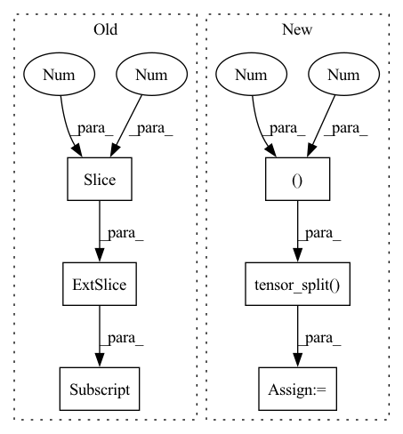

Pattern ID :22735

Before Change
// Regression
pxy = ps[:, :2].sigmoid() * 2. - 0.5
pwh = (ps[:, 2:4].sigmoid() * 2) ** 2 * anchors[i]
pbox = torch.cat((pxy, pwh), 1) // predicted box
iou = bbox_iou(pbox.T, tbox[i], x1y1x2y2=False, CIoU=True) // iou(prediction, target)
if self.g2>0 :// Focal-EIOU https://arxiv.org/abs/2101.08158
After Change
n = b.shape[0] // number of targets
if n:
pxy, pwh, _, pcls = pi[b, a, gj, gi].tensor_split((2, 4, 5), dim=1) // target-subset of predictions
// Regression
pxy = pxy.sigmoid() * 2 - 0.5
In pattern: SUPERPATTERN
Frequency: 3
Non-data size: 6
Instances
Fragment ID: 72195597
Project Name: positive666/yolov5_research
Commit Name: 2005e73bf52d6235acbdbe1b08773d423ab31118
Time: 2022-03-20
Author: 286040359@qq.com
File Name: utils/loss.py
M Class Name: ComputeLoss
N Class Name: ComputeLoss
M Method Name: __call__(3)
N Method Name: __call__(3)
M Parent Class:
N Parent Class:
M File Name: utils/loss.py
N File Name: utils/loss.py
M Start Line: 119
M End Line: 153
N Start Line: 120
N End Line: 155
'>
Before Change
// Regression
pxy = ps[:, :2].sigmoid() * 2 - 0.5
pwh = (ps[:, 2:4].sigmoid() * 2) ** 2 * anchors[i]
pbox = torch.cat((pxy, pwh), 1) // predicted box
iou = bbox_iou(pbox.T, tbox[i], x1y1x2y2=False, CIoU=True) // iou(prediction, target)
lbox += (1.0 - iou).mean() // iou loss
After Change
n = b.shape[0] // number of targets
if n:
pxy, pwh, _, pcls = pi[b, a, gj, gi].tensor_split((2, 4, 5), dim=1) // target-subset of predictions
// Regression
pxy = pxy.sigmoid() * 2 - 0.5
'>
Fragment ID: 72195596
Project Name: ultralytics/yolov5
Commit Name: b0ba101ac0aa898a4e4b867d377e140af8d4258a
Time: 2022-03-19
Author: glenn.jocher@ultralytics.com
File Name: utils/loss.py
M Class Name: ComputeLoss
N Class Name: ComputeLoss
M Method Name: __call__(3)
N Method Name: __call__(3)
M Parent Class:
N Parent Class:
M File Name: utils/loss.py
N File Name: utils/loss.py
M Start Line: 118
M End Line: 149
N Start Line: 120
N End Line: 152
'>
Before Change
y[..., 0:2] = (y[..., 0:2] * 2 - 0.5 + self.grid[i]) * self.stride[i] // xy
y[..., 2:4] = (y[..., 2:4] * 2) ** 2 * self.anchor_grid[i] // wh
else: // for YOLOv5 on AWS Inferentia https://github.com/ultralytics/yolov5/pull/2953
xy = (y[..., 0:2] * 2 - 0.5 + self.grid[i]) * self.stride[i] // xy
wh = (y[..., 2:4] * 2) ** 2 * self.anchor_grid[i] // wh
y = torch.cat((xy, wh, y[..., 4:]), -1)
z.append(y.view(bs, -1, self.no))
After Change
y[..., 0:2] = (y[..., 0:2] * 2 - 0.5 + self.grid[i]) * self.stride[i] // xy
y[..., 2:4] = (y[..., 2:4] * 2) ** 2 * self.anchor_grid[i] // wh
else: // for YOLOv5 on AWS Inferentia https://github.com/ultralytics/yolov5/pull/2953
xy, wh, conf = y.tensor_split((2, 4), 4)
xy = (xy * 2 - 0.5 + self.grid[i]) * self.stride[i] // xy
wh = (wh * 2) ** 2 * self.anchor_grid[i] // wh
y = torch.cat((xy, wh, conf), 4)
z.append(y.view(bs, -1, self.no))
'>
Fragment ID: 72195598
Project Name: ultralytics/yolov5
Commit Name: d5e363f29d7619f2a186678eb6d61672f49b11f1
Time: 2022-03-20
Author: glenn.jocher@ultralytics.com
File Name: models/yolo.py
M Class Name: Detect
N Class Name: Detect
M Method Name: forward(2)
N Method Name: forward(2)
M Parent Class: nn.Module
N Parent Class: nn.Module
M File Name: models/yolo.py
N File Name: models/yolo.py
M Start Line: 60
M End Line: 67
N Start Line: 60
N End Line: 68